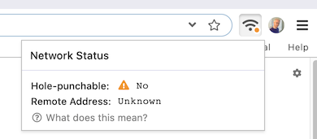

If your network is "not hole-punchable," you may have trouble connecting to other peers. This may be due to your network configuration.
Beaker's peer-to-peer networking relies on "hole-punching," a technique which makes your device accessible to people outside of your local network.
In some cases, hole-punching may fail. This will be indicated by Beaker in the top right:

This doesn't mean that all connections will fail, but it does mean that the odds of failed connection are higher.
Some network routers and VPNs do not support hole-punching. If you're using a VPN, try disabling it. You may also need to try other networks.
We're working on ways to ensure connectivity even if hole-punching fails. Sorry if this is an ongoing problem for you!